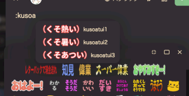
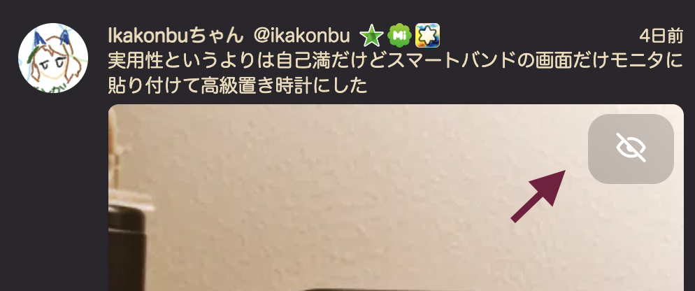

日本語
English
関西弁
Misskey TL filter
このままでは動きません
お使いのブラウザでは動作しません。
ChromeやEdgeの場合はブラウザをアップデートしてください
Firefoxの方は設定を変更することで利用できます。
アドレスバーに
about:config
を入力
警告が出るがOKを押して進む
設定の中から
layout.css.has-selector.enabled
を探す
(画面上の検索バーに入力すると出てきます)
該当する設定をダブルクリックし、値を
"true"
にする
Firefoxを再起動
ホーム
RNを非表示
引用を非表示
NSFWを非表示
CWを非表示
メディア非表示
ローカル
RNを非表示
引用を非表示
NSFWを非表示
CWを非表示
botを非表示
リスト
RNを非表示
引用を非表示
NSFWを非表示
CWを非表示
メディア非表示
プロフィール
RNを非表示
引用を非表示
NSFWを非表示
CWを非表示
メディア非表示
ソーシャル
RNを非表示
引用を非表示
NSFWを非表示
CWを非表示
botを非表示
グローバル
RNを非表示
引用を非表示
NSFWを非表示
CWを非表示
ローカル非表示
ロール
RNを非表示
引用を非表示
NSFWを非表示
CWを非表示
メディア非表示
すべてのTLで適用される設定
チャンネルからの投稿
フィルターなし
クリックで切り替え
リノート
フィルターなし
クリックで切り替え
NSFW
フィルターなし
クリックで切り替え
サーバーフィルタ
フィルターなし
クリックで切り替え
メディア
フィルターなし
クリックで切り替え
入力されたユーザーIDのノートを問答無用ですべて非表示にします。
複数人いる場合は、「,」で区切って入力してください
例: ikakonbu,syuilo,abc123
ユーザーミュート
入力されたユーザーのRenoteだけを非表示にします。
複数人いる場合は、「,」で区切って入力してください
例: ikakonbu,syuilo,abc123
ユーザーRenoteミュート
その他の設定
フォロー、フォロワー数を隠す
投稿時、リアクション時の絵文字画面を変えます。
下の写真のように見やすくなります

横長絵文字を見やすくする
画像の右上にある、画像を隠すボタンを大きくして
押しやすくします

画像を隠すボタンを大きくする
他のサーバーでも動かせるようになります。
下にある「標準設定で動くサーバー一覧」
にあるサーバーでは、そのまま動きます。
複数サーバある場合は、「,」で区切って入力してください
例: misskey.art,misskey.cf
Misskey.io以外での動作は保証していません。
動いたらラッキー程度に考えてください
他のサーバでも動かす
今の設定をCSSとして出力します。
出できたコードをコピーして、設定したいPCやスマホの
Misskey 設定→全般→カスタムCSSに貼り付けることで、
スマホでも同じフィルタリングをかけられます。
(CSSの動作保証はブラウザ版のみです。
クライアントのカスタムCSS機能では動作しない可能性があります)
今の設定をCSSに
出力する
つくった人のプロフ
説明書はこちら
標準設定で動作するするサーバー一覧
当ソフトウェアは個人が趣味で作っています。動かないとき、新しい機能が欲しい時は連絡ください
ver1.4-beta